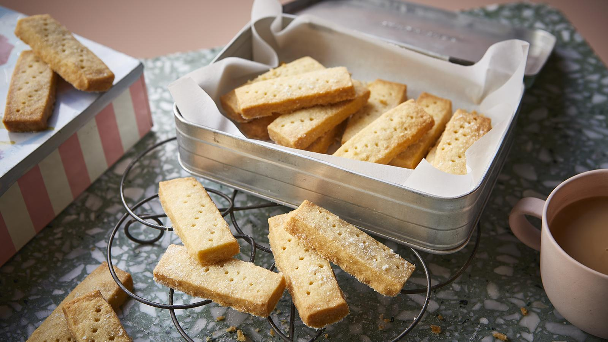

The best thing about shortbread is that it's simple. Anybody can make shortbread, and most importantly, any age. It's a great recipe to do with the kids or the whole family, and it's an easy excuse to find some quality time together. At the same time it tastes great! For me it has a more personal meaning. It signals that Christmas is coming around. Whenever it was coming up to the holidays, my mother would be in the kitchen making shortbread. A portion for us and a portion for the neighbours. In the end myself and my Dad ended up having to have our own separtate tins as we could never agree as to who had what! Then when it was done we'd go around the village knocking on people's doors and dropping it off (if we liked them of course!). Even now that memory persists as a reason why potentially the simplest dish in the world, has a very complex hold over me. I love making shortbread and I hope that after this, you will too! It's a fantastic recipe, and while I personally prefer having it in the winter, it really doesn't lose its charm all year round.
I hope you had as much fun as I did following along with this recipe! Whether it's Summer, Winter or anything in between, you can't beat a classic tray of shortbread. If you enjoyed this recipe and want to see more from our site, click any of the links below!